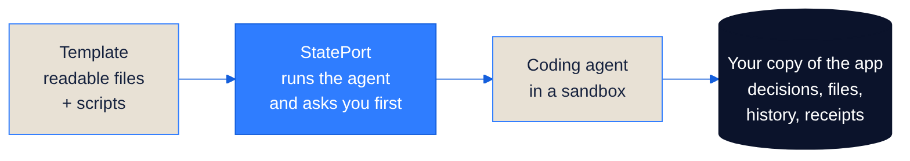

01 / CHECK
Check the machine
Windows 11 on a 64-bit Intel or AMD PC, WSL2 with Ubuntu 24.04, systemd switched on, and a normal Ubuntu user that can use sudo. The download page lists each check.
 StatePort
StatePort
Early alpha · Windows 11 + WSL2
StatePort keeps the plan and progress of AI-assisted work in plain files on your own computer. Changes wait for your approval, and a receipt records what was done.
Alpha.24 has a one-line installer for Windows 11 + WSL2: it installs and passes in a clean test VM; real-Windows and reboot results pending. Early alpha, known limits below. Get the install command →
 View full size
View full size
The study example
The sample app is a small study planner called StudyState. It keeps a goal and a few activities. You start an activity and approve the change it proposes. Then you write a reflection and approve saving it. The goal, activities and reflection are saved as files on your computer.
These screens show the sample. A receipt records the change you approved. The reflection is your own account of what you learned. Click a screen to enlarge it, or watch the 72-second walkthrough.

Before: the activity is not started. Review and approve the change to in progress.

After reviewing and saving a reflection, inspect the receipt to see what was applied.

Your progress and reflections in a narrow layout, as on a phone.
More
What StudyState is and what the sample does.
Read about StudyState 02 / DOCSSetup, privacy, templates, backup and troubleshooting.
Open the docs 03 / PAPERSStateware is my name for software that keeps its state in plain files you own, so you can change the AI tool without losing the work.
Read the papersProduct walkthrough
See an application remember your study plan, propose a change, and record a receipt, in a 19-second clip. Captions and a transcript are included.
This clip shows the real interface, recorded in August 2026 on an earlier development build. Screens in Alpha.24 may differ. It shows the study sample and a receipt; it does not show installing or setting anything up.
AI chats forget. Your work shouldn't. StatePort gives AI-assisted work a durable home on your own machine.
A real app retains its context: the study plan, the progress, the evidence — not a blank chat box.
And every run leaves a receipt: what was asked, what was allowed, what was done.
Try it
StatePort Alpha.24 is an early alpha. If you have a Windows 11 computer with WSL2 and Ubuntu 24.04, you can install it with one command. Use a test machine and test data only.
01 / CHECK
Windows 11 on a 64-bit Intel or AMD PC, WSL2 with Ubuntu 24.04, systemd switched on, and a normal Ubuntu user that can use sudo. The download page lists each check.
02 / RUN
Open Ubuntu and paste this as your normal user. Along the way it asks for your sudo password and for two typed confirmations.
bash <(curl -fsSL https://lennertvhoy.github.io/StatePort-Site/download/install.sh)Want a dry run first? Add --transport-probe at the end. It installs nothing.
03 / OPEN
A successful run prints StatePort is installed and healthy and a local address such as http://127.0.0.1:18216/. Open it in your Windows browser.
Report a problem on GitHub (opens in a new tab) Full install guide
Overview
01
Goals, decisions and history are saved as readable files on your own computer, not inside a chat session.
02
State is saved on disk, not held in a chat window. On Alpha.21 the study sample's saved state was still there after a page reload; that was measured again on Alpha.23 and Alpha.24 through the product's own interface, with the saved data still there after a StatePort service restart and a full WSL distribution restart. Whether StatePort keeps running after the last Ubuntu window closes was not measured on Alpha.23 or Alpha.24, and a Windows reboot is not measured (reboot: not measured).
03
In the StudyState sample, a change is proposed first and you approve it. You can then open its receipt. Output from coding agents is recorded as a run result. StatePort does not yet save it into your app's state.
How it works
01 / TEMPLATE
A template is a set of files for one kind of app. It has a workflow and the files that hold your goals and progress.
02 / RUN
StatePort shows what the app wants to change and waits for you to approve it.
03 / KEEP
Your decisions, files and history stay together on your machine.

More
Curious
Follow it from review to saved reflection. The recordings come from an earlier build.
Open the walkthroughBuilders
How StatePort stores work, asks for approval, and backs up.
Open the docsSelf-hosters
What you can view or download today.
Open the release statusAgent Kits (shareable app packages) are an idea, not a release. Read what is planned.
About
StatePort is an open source project. The site and the release files are public, and the installer is a plain script you can read before you run it. Questions, bugs and feedback all go to GitHub issues (opens in a new tab).